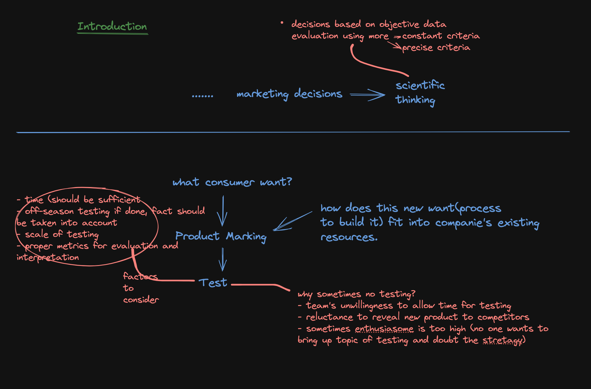

← back to home
Modern Marketing 1964
it's a collection of articles. edited by Edward C. Bursk & John F. Chapman
Introduction
marketing managers must now base their plans on far more extensive and objective data and evaluate their actions by more constant and precise criteria.
marketing research -> marketing management. (lot of corporations now have too high capacity to produce goods, higher than what marketing and sales could move along to the consumer.)
there's been need to find new ways of finding out in advance what the consumer wants and will buy, and new ways of getting it to him more cheaply.
1. consumer
2. product and product stretagies
3. role of research
4. economics of advertising
5. pricing policies and profit goals
1. consumer
how consumer research can be managed, what quality of results can be achieved, and how they can be interpreted and applied.
2. product and product stretagies
#brand image #styling #marketing use of functional features
consumer psychology: loyalty to a specific brand of product
people have varying degree of loyalty to different products, significant amount of brand loyalty do exist within individual product groups.
automobile vs water heater. difference in functional features marketing.
consumer wishes can't be only measure of feasibility of adding new product to line. of equal significance is the way in which the new product can be fitted into the company's existing resources.
3. role of research
market testing
4. economics of advertising
In search of profit and growth corporate management has focused on technological aspects of bussiness. Today it could be in marketing as well.
lot of money would go waste in advertising if objective is not well-defined.
5. pricing policies and profit goals

Keywords
1. systematic analysis & planning
2. decisions @ highest level of company
3. post war development of Tech
4.